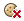
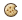

Manage your cookies and site data
You have control when it comes to cookie permissions in Google Chrome. All cookies are allowed by default, but you can adjust this setting. If cookies have been set or blocked on the page you’re viewing, an icon appears at the end of the address bar.
Adjust cookie and site data permissions
- Click the Chrome menu
on the browser toolbar.
- Select Settings.
- Click Show advanced settings.
- In the "Privacy" section, click the Content settings button.
- In the "Cookies" section, you can change the following cookies settings:
Delete cookies
Click All cookies and site data to open the Cookies and Other Data dialog.- To delete all cookies, click Remove all at the bottom of the dialog.
- To delete a specific cookie, hover over the site that issued the cookie with your mouse, then click the X that appears on the right corner.
You can also choose to remove all cookies created during a specific time period, using the Clear Browsing Data dialog.
If you want Google Chrome to automatically delete cookies when you close all your browser windows, select the "Keep local data only until I quit my browser" checkbox in the Content Settings dialog. You can also make exceptions so that specific sites’ cookies are deleted whenever you close your browser.
Block cookies by default
- Block all cookies: Select "Block sites from setting any data." Keep in mind that selecting this setting will prevent most sites that require you to sign in from working. You'll see  in the address bar whenever a cookie has been blocked.
- Block only third-party cookies: Select the "Block third-party cookies and site data" checkbox. Even if you've added a site to the Exceptions list and have chosen to allow its cookies, the site's third-party cookies won't be accepted if this checkbox is selected.
Allow cookies by default
Make sure "Allow local data to be set" is selected to allow both first-party and third-party cookies. If you only want to accept first-party cookies, select the "Block all third-party cookies without exception" checkbox.
Keep cookies and site data by default until you quit your browser
Chrome will allow sites to keep local data including first-party and third-party cookies and erase them when you exit or quit Chrome.
Certain cookies and other data associated with hosted apps can't be cleared through Content settings. Learn how to clear hosted app data by deleting your cache and other browsing data
Make exceptions for cookies from specific websites or domains
To control how cookies should be handled for a few specific sites or domains, click Manage exceptions. To add a rule in the Cookie and Site Data Exceptions dialog that appears, follow these steps:
- Click the "Add a new exception pattern" field and enter the domain name for which you want to create an exception.
- To create exceptions for an entire domain, insert
[*.]before the domain name (e.g.[*.]google.com. This will match drive.google.com and calendar.google.com). - You can also specify an IP address, an IPv6 address, or a non-http URL.
- To create exceptions for an entire domain, insert
- Use the menu to choose whether the site can set cookies. If you select Clear on exit, its cookies are deleted every time you close your browser.
You can also edit or remove exceptions using this dialog.
Using a Chromebook at work or school? Your network administrator might configure cookies for you, in which case you can't change these settings yourself. Learn about using a managed Chromebook
See cookie information for the page you're viewing
Icons may appear in the address bar to alert you about blocked or set cookies:
- The icon appears whenever a cookie has been blocked on the page you’re viewing, even if you’ve allowed all local data by default, due to exceptions you’ve made for specific domains.
- The  icon appears whenever cookies have been set on the page you’re viewing, even though you’ve blocked all cookies by default, due to exceptions you’ve made for specific domains.
To see the cookies that have been set or blocked, just click the icon, then click Show cookies and site data. You can then make the following exceptions:
- Re-block allowed cookies: In the "Allowed" tab, select the site from the list at the top and click Block. These domains will be added to your exceptions list.
- Allow cookies from a domain: In the "Blocked" tab, select the site from the list at the top and click Allow. These domains will be added to your exceptions list.
If you select “Continue where I left off” as your browser startup option, your session cookies will be stored when you exit; this will keep you logged into a site, e.g. Gmail.
- Allow cookies from a domain until you exit or quit Chrome: In the "Blocked" tab, select the site from the list at the top and click Clear on exit. The cookies are deleted every time you close your browser.
You may need to reload the page for the changes to take effect. Even if you've chosen to allow a site’s cookies, its third-party cookies won't be accepted if the "Block all third-party cookies without exception" checkbox is selected.